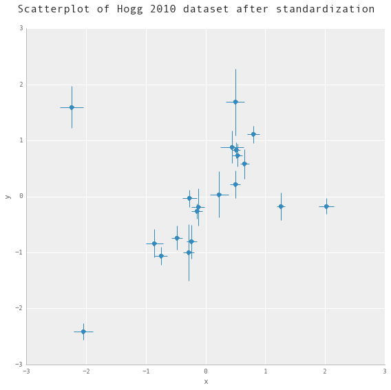
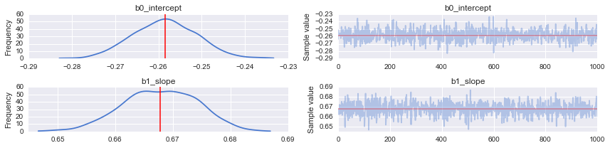

PyMC3 Examples
Robust Regression with Outlier Detection
@author: Jonathan Sedar
@email: jon@sedar.co
@date: Mon 21 Dec 2015
A minimal reproducable example of Robust Regression with Outlier Detection using Hogg 2010 Signal vs Noise method.
- This is a complementary approach to the Student-T robust regression as illustrated in Thomas Wiecki's notebook in the PyMC3 documentation
- This model returns a robust estimate of linear coefficients and an indication of which datapoints (if any) are outliers.
- The likelihood evaluation is essentially a copy of eqn 17 in "Data analysis recipes: Fitting a model to data" - Hogg 2010
- The model is adapted specifically from Jake Vanderplas' implementation (3rd model tested)
- The dataset is tiny and hardcoded into this Notebook. It contains errors in both the x and y, but we will deal here with only errors in y.
Note:
- Python 3.3 project using latest available PyMC3
- Developed using ContinuumIO Anaconda distribution on a Macbook Pro 3GHz i7, 16GB RAM, OSX 10.10.5.
- During development I've found that 3 data points are always indicated as outliers, but the remaining ordering of datapoints by decreasing outlier-hood is slightly unstable between runs: the posterior surface appears to have a small number of solutions with similar probability.
- Finally, if runs become unstable or Theano throws weird errors, try clearing the cache
$> theano-cache clearand rerunning the notebook.
Package Requirements (shown as a conda-env YAML):
$> less conda_env_pymc3_examples.yml
name: pymc3_examples
channels:
- defaults
dependencies:
- python=3.3
- ipython
- ipython-notebook
- ipython-qtconsole
- numpy
- scipy
- matplotlib
- pandas
- seaborn
- pip
$> conda env create --file conda_env_pymc3_examples.yml
$> source activate pymc3_examples
$> pip install --process-dependency-links git+https://github.com/pymc-devs/pymc3
Setup
%matplotlib inline
%qtconsole --colors=linux
import numpy as np
import pandas as pd
import matplotlib.pyplot as plt
import seaborn as sns
from scipy import optimize
import pymc3 as pm
import theano as thno
import theano.tensor as T
# configure some basic options
sns.set(style="darkgrid", palette="muted")
pd.set_option('display.mpl_style', 'default')
pd.set_option('display.notebook_repr_html', True)
plt.rcParams['figure.figsize'] = 12, 8
np.random.seed(0)
Load and Prepare Data
We'll use the Hogg 2010 data available at https://github.com/astroML/astroML/blob/master/astroML/datasets/hogg2010test.py
It's a very small dataset so for convenience, it's hardcoded below
## cut & pasted directly from the fetch_hogg2010test() function
## identical to the original dataset as hardcoded in the Hogg 2010 paper
dfhogg = pd.DataFrame(np.array([[1, 201, 592, 61, 9, -0.84],
[2, 244, 401, 25, 4, 0.31],
[3, 47, 583, 38, 11, 0.64],
[4, 287, 402, 15, 7, -0.27],
[5, 203, 495, 21, 5, -0.33],
[6, 58, 173, 15, 9, 0.67],
[7, 210, 479, 27, 4, -0.02],
[8, 202, 504, 14, 4, -0.05],
[9, 198, 510, 30, 11, -0.84],
[10, 158, 416, 16, 7, -0.69],
[11, 165, 393, 14, 5, 0.30],
[12, 201, 442, 25, 5, -0.46],
[13, 157, 317, 52, 5, -0.03],
[14, 131, 311, 16, 6, 0.50],
[15, 166, 400, 34, 6, 0.73],
[16, 160, 337, 31, 5, -0.52],
[17, 186, 423, 42, 9, 0.90],
[18, 125, 334, 26, 8, 0.40],
[19, 218, 533, 16, 6, -0.78],
[20, 146, 344, 22, 5, -0.56]]),
columns=['id','x','y','sigma_y','sigma_x','rho_xy'])
## for convenience zero-base the 'id' and use as index
dfhogg['id'] = dfhogg['id'] - 1
dfhogg.set_index('id', inplace=True)
## standardize (mean center and divide by 1 sd)
dfhoggs = (dfhogg[['x','y']] - dfhogg[['x','y']].mean(0)) / dfhogg[['x','y']].std(0)
dfhoggs['sigma_y'] = dfhogg['sigma_y'] / dfhogg['y'].std(0)
dfhoggs['sigma_x'] = dfhogg['sigma_x'] / dfhogg['x'].std(0)
## scatterplot the standardized data
g = sns.FacetGrid(dfhoggs, size=8)
_ = g.map(plt.errorbar, 'x', 'y', 'sigma_y', 'sigma_x', marker="o", ls='')
_ = g.axes[0][0].set_ylim((-3,3))
_ = g.axes[0][0].set_xlim((-3,3))
plt.subplots_adjust(top=0.92)
_ = g.fig.suptitle('Scatterplot of Hogg 2010 dataset after standardization', fontsize=16)

Observe:
- Even judging just by eye, you can see these datapoints mostly fall on / around a straight line with positive gradient
- It looks like a few of the datapoints may be outliers from such a line
Create and Run Conventional OLS Model
The linear model is really simple and conventional:
where:
sigma_y
Define model
NOTE: + We're using a simple linear OLS model with Normally distributed priors so that it behaves like a ridge regression
with pm.Model() as mdl_ols:
## Define weakly informative Normal priors to give Ridge regression
b0 = pm.Normal('b0_intercept', mu=0, sd=100)
b1 = pm.Normal('b1_slope', mu=0, sd=100)
## Define linear model
yest = b0 + b1 * dfhoggs['x']
## Use y error from dataset, convert into theano variable
sigma_y = thno.shared(np.asarray(dfhoggs['sigma_y'],
dtype=thno.config.floatX), name='sigma_y')
## Define Normal likelihood
likelihood = pm.Normal('likelihood', mu=yest, sd=sigma_y**2, observed=dfhoggs['y'])
Sample
with mdl_ols:
## find MAP using Powell, seems to be more robust
start_MAP = pm.find_MAP(fmin=optimize.fmin_powell, disp=True)
## take samples
traces_ols = pm.sample(2000, start=start_MAP, step=pm.NUTS(), progressbar=True)
Optimization terminated successfully.
Current function value: 4555.263214
Iterations: 3
Function evaluations: 104
[-----------------100%-----------------] 2000 of 2000 complete in 0.7 sec
View Traces
NOTE: I'll 'burn' the traces to only retain the final 1000 samples
_ = pm.traceplot(traces_ols[-1000:], figsize=(12,len(traces_ols.varnames)*1.5),
lines={k: v['mean'] for k, v in pm.df_summary(traces_ols[-1000:]).iterrows()})

We'll illustrate this OLS fit and compare to the datapoints in the final plot
Create and Run Robust Model
Please read the paper (Hogg 2010) and Jake Vanderplas' code for more complete information about the modelling technique.
The general idea is to create a 'mixture' model whereby datapoints can be described by either the linear model (inliers) or a modified linear model with different mean and larger variance (outliers).
The likelihood is evaluated over a mixture of two likelihoods, one for 'inliers', one for 'outliers'. A Bernouilli distribution is used to randomly assign datapoints in N to either the inlier or outlier groups, and we sample the model as usual to infer robust model parameters and inlier / outlier flags:
where:
Define model
def logp_signoise(yobs, is_outlier, yest_in, sigma_y_in, yest_out, sigma_y_out):
'''
Define custom loglikelihood for inliers vs outliers.
Note: in this particular case we don't need to use theano's @as_op
decorator because (as stated by Twiecki in conversation) that's only
required if the likelihood cannot be expressed as a theano expression.
We also now get the gradient computation for free.
'''
# likelihood for inliers
pdfs_in = T.exp(-(yobs - yest_in + 1e-6)**2 / (2 * sigma_y_in**2))
pdfs_in /= T.sqrt(2 * np.pi * sigma_y_in**2)
logL_in = T.sum(T.log(pdfs_in) * (1 - is_outlier))
# likelihood for outliers
pdfs_out = T.exp(-(yobs - yest_out + 1e-6)**2 / (2 * (sigma_y_in**2 + sigma_y_out**2)))
pdfs_out /= T.sqrt(2 * np.pi * (sigma_y_in**2 + sigma_y_out**2))
logL_out = T.sum(T.log(pdfs_out) * is_outlier)
return logL_in + logL_out
with pm.Model() as mdl_signoise:
## Define weakly informative Normal priors to give Ridge regression
b0 = pm.Normal('b0_intercept', mu=0, sd=100)
b1 = pm.Normal('b1_slope', mu=0, sd=100)
## Define linear model
yest_in = b0 + b1 * dfhoggs['x']
## Define weakly informative priors for the mean and variance of outliers
yest_out = pm.Normal('yest_out', mu=0, sd=100)
sigma_y_out = pm.HalfNormal('sigma_y_out', sd=100)
## Define Bernoulli inlier / outlier flags according to a hyperprior
## fraction of outliers, itself constrained to [0,.5] for symmetry
frac_outliers = pm.Uniform('frac_outliers', lower=0., upper=.5)
is_outlier = pm.Bernoulli('is_outlier', p=frac_outliers, shape=dfhoggs.shape[0])
## Extract observed y and sigma_y from dataset, encode as theano objects
yobs = thno.shared(np.asarray(dfhoggs['y'], dtype=thno.config.floatX), name='yobs')
sigma_y_in = thno.shared(np.asarray(dfhoggs['sigma_y']
, dtype=thno.config.floatX), name='sigma_y_in')
## Use custom likelihood using DensityDist
likelihood = pm.DensityDist('likelihood', logp_signoise,
observed={'yobs':yobs, 'is_outlier':is_outlier,
'yest_in':yest_in, 'sigma_y_in':sigma_y_in,
'yest_out':yest_out, 'sigma_y_out':sigma_y_out})
Sample
with mdl_signoise:
## two-step sampling to create Bernoulli inlier/outlier flags
step1 = pm.NUTS([frac_outliers, yest_out, sigma_y_out, b0, b1])
step2 = pm.BinaryMetropolis([is_outlier])
## find MAP using Powell, seems to be more robust
start_MAP = pm.find_MAP(fmin=optimize.fmin_powell, disp=True)
## take samples
traces_signoise = pm.sample(1000, start=start_MAP, step=[step1,step2], progressbar=True)
Optimization terminated successfully.
Current function value: 155.449990
Iterations: 3
Function evaluations: 226
[-----------------100%-----------------] 1000 of 1000 complete in 93.1 sec
View Traces
_ = pm.traceplot(traces_signoise[-1000:], figsize=(12,len(traces_signoise.varnames)*1.5),
lines={k: v['mean'] for k, v in pm.df_summary(traces_signoise[-1000:]).iterrows()})

NOTE::
- During development I've found that 3 datapoints id=[1,2,3] are always indicated as outliers, but the remaining ordering of datapoints by decreasing outlier-hood is unstable between runs: the posterior surface appears to have a small number of solutions with very similar probability.
- The NUTS sampler seems to work okay, and indeed it's a nice opportunity to demonstrate a custom likelihood which is possible to express as a theano function (thus allowing a gradient-based sampler like NUTS). However, with a more complicated dataset, I would spend time understanding this instability and potentially prefer using more samples under Metropolis-Hastings.
Declare Outliers and Compare Plots
View ranges for inliers / outlier predictions
At each step of the traces, each datapoint may be either an inlier or outlier. We hope that the datapoints spend an unequal time being one state or the other, so let's take a look at the 95% credible region for each of the 20 datapoints.
outlier_melt = pd.melt(pd.DataFrame(traces_signoise['is_outlier', -1000:],
columns=['[{}]'.format(int(d)) for d in dfhoggs.index]),
var_name='datapoint_id', value_name='is_outlier')
ax0 = sns.pointplot(y='datapoint_id', x='is_outlier', data=outlier_melt,
kind='point', join=False, ci=None, size=4, aspect=2)
_ = ax0.vlines([0,1], 0, 19, ['b','r'], '--')
_ = ax0.set_xlim((-0.1,1.1))
_ = ax0.set_xticks(np.arange(0, 1.1, 0.1))
_ = ax0.set_xticklabels(['{:.0%}'.format(t) for t in np.arange(0,1.1,0.1)])
_ = ax0.yaxis.grid(True, linestyle='-', which='major', color='w', alpha=0.4)
_ = ax0.set_title('Prop. of the trace where datapoint is an outlier')
_ = ax0.set_xlabel('Prop. of the trace where is_outlier == 1')

Observe:
- The plot above shows the number of samples in the traces in which each datapoint is marked as an outlier, expressed as a percentage.
- In particular, 3 points [1, 2, 3] spend >=95% of their time as outliers
- Contrastingly, points at the other end of the plot close to 0% are our strongest inliers.
- For comparison, the mean posterior value of
frac_outliersis ~0.35, corresponding to roughly 7 of the 20 datapoints. You can see these 7 datapoints in the plot above, all those with a value >50% or thereabouts. - However, only 3 of these points are outliers >=95% of the time.
- See note above regarding instability between runs.
The 95% cutoff we choose is subjective and arbitrary, but I prefer it for now, so let's declare these 3 to be outliers and see how it looks compared to Jake Vanderplas' outliers, which were declared in a slightly different way as points with means above 0.68.
Declare outliers
Note: + I will declare outliers to be datapoints that have value == 1 at the 5-percentile cutoff, i.e. in the percentiles from 5 up to 100, their values are 1. + Try for yourself altering cutoff to larger values, which leads to an objective ranking of outlier-hood.
cutoff = 5
dfhoggs['outlier'] = np.percentile(traces_signoise[-1000:]['is_outlier'],cutoff, axis=0)
dfhoggs['outlier'].value_counts()
0 17
1 3
dtype: int64
Posterior Prediction Plots for OLS vs Robust
g = sns.FacetGrid(dfhoggs, size=8, hue='outlier', hue_order=[True,False],
palette='Set1', legend_out=False)
lm = lambda x, samp: samp['b0_intercept'] + samp['b1_slope'] * x
pm.glm.plot_posterior_predictive(traces_ols[-1000:],
eval=np.linspace(-3, 3, 10), lm=lm, samples=200, color='y', alpha=.1)
pm.glm.plot_posterior_predictive(traces_signoise[-1000:],
eval=np.linspace(-3, 3, 10), lm=lm, samples=200, color='g', alpha=.2)
_ = g.map(plt.errorbar, 'x', 'y', 'sigma_y', 'sigma_x', marker="o", ls='').add_legend()
_ = g.axes[0][0].annotate('OLS Fit: Yellow\nRobust Fit: Green', size='x-large',
xy=(1,0), xycoords='axes fraction',
xytext=(-160,10), textcoords='offset points')
_ = g.axes[0][0].set_ylim((-3,3))

Observe: + The posterior predictive fit for the OLS model is shown in Yellow and as expected, it doesn't appear to fit the majority of our datapoints very well. + The posterior predictive fit for the Robust model is shown in Green does appear to fit the 'main axis' of datapoints rather well + We also see that the Robust model has estimated 3 datapoints shown in Red to be outliers. From even this simple inspection, the classification seems fair, and happily also agrees with Jake Vanderplas' findings.